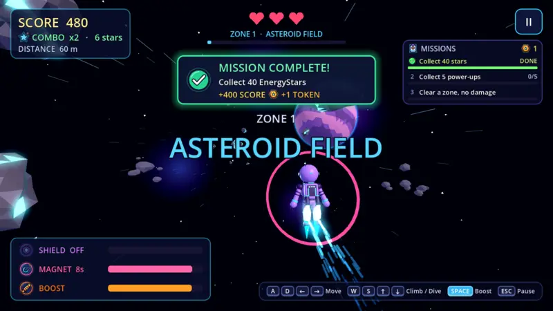
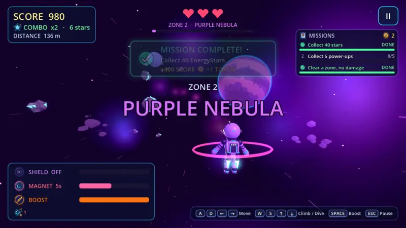
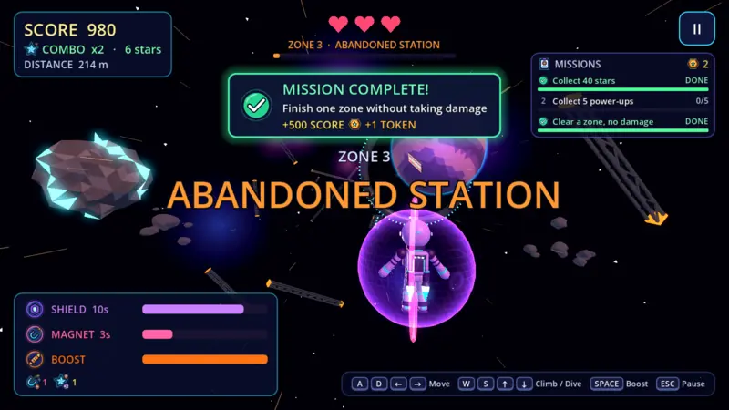
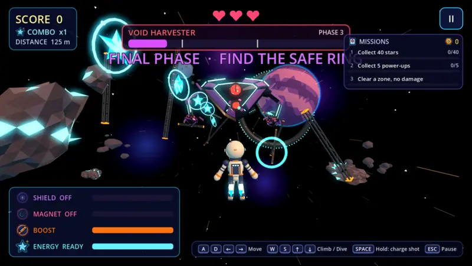
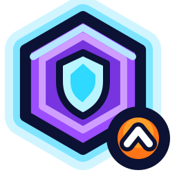
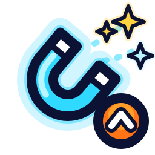
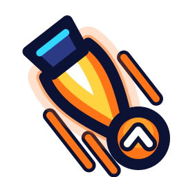
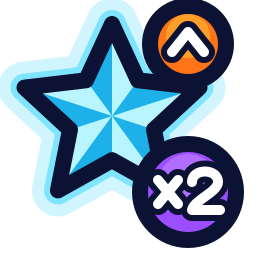
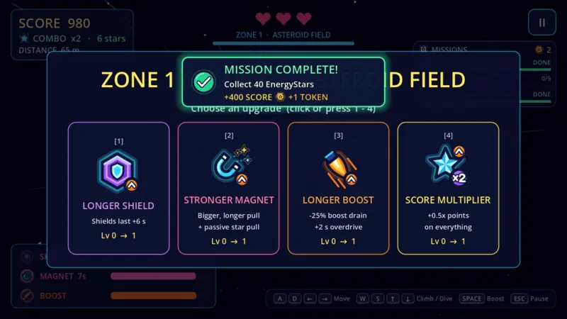
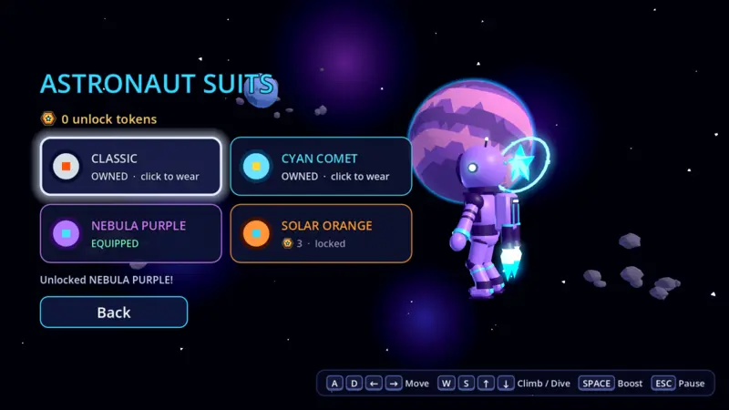

How a run goes
Every zone lasts a minute. Survive it, pick an upgrade, and fly on into the next one, faster than before.
-

Zone 1Asteroid Field
Weave between tumbling rocks and space mines. Grab EnergyStars back to back to build a combo, and scrape past danger for near-miss points.
-

Zone 2Purple Nebula
Glowing gas, laser gates and less room to think. Shield, magnet and boost power-ups float in your path. Each one is a gamble on the line you fly.
-

Zone 3Abandoned Station
Broken girders and drifting debris from a station that didn't make it. Finish a zone without a scratch to complete the hardest mission.
-

BossThe Void Harvester
Fly far enough and it finds you. Your suit fires on its own. Hold space to charge a heavy shot.
Three phases: sweeping beams, a mine barrage, then a final stand where only the safe ring keeps you alive.
Then the zones loop, and everything gets a bit faster. The run ends when your three hearts are gone.
Build your run
Between zones you choose one upgrade. Missions pay out unlock tokens that you spend on new suits.
Upgrades
One pick per cleared zone, stacking for the rest of the run.

Longer shieldShields last longer
Stronger magnetPulls stars from further away
Longer boostLess drain, more overdrive
Score multiplierMore points on everything
Missions
Three at a time: collect 40 stars, get 8 near-misses without a hit, reach a ×4 combo. Finish one for bonus score and a token.
Suits
Swap your look in the Customize menu.


Controls
Keyboard only. You can see them on screen while you play, too.
- ADMove left and right
- WSClimb and dive
- SpaceBoost, or hold to charge a shot in the boss fight
- EscPause
Installing
The game isn't registered with Apple or Microsoft yet, so the first launch needs a few extra clicks. After that it opens like any other app.
Mac
- Open StellarSalvageRun.dmg and drag the game onto the Applications folder.
- Open the game once. macOS says it can't check it for malware: click Done.
- Go to System Settings → Privacy & Security, scroll down and click Open Anyway, then Open.
You only do this once. macOS shows the warning because the game isn't registered with Apple yet, not because something is wrong with it.
Windows
- Right-click StellarSalvageRun_Windows.zip and choose Extract All.
- Open the folder and double-click Stellar Salvage Run.exe.
- If a blue “Windows protected your PC” box appears, click More info, then Run anyway.
Your progress, tokens and suits are saved automatically.